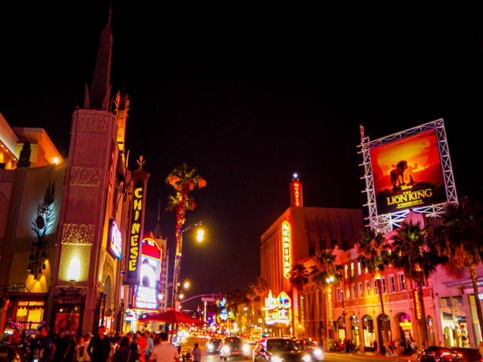
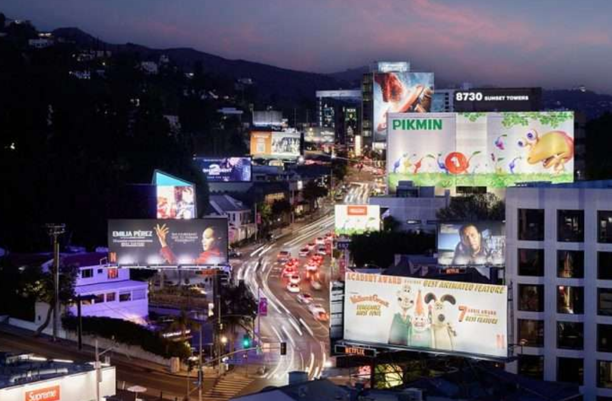
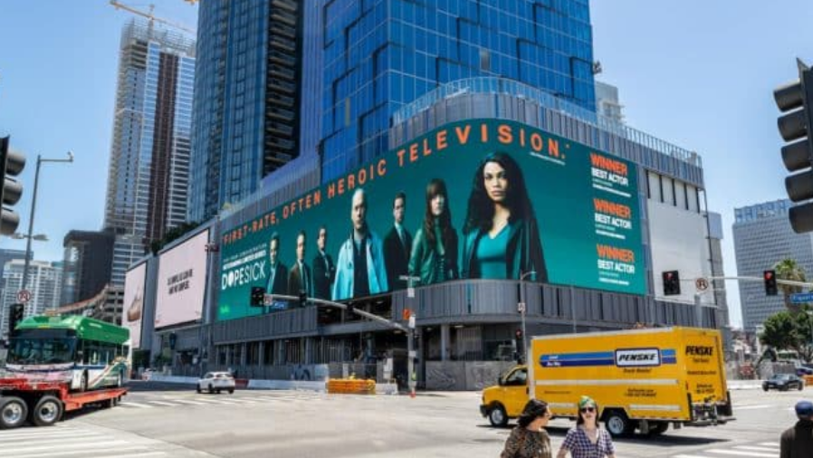

Well, the aesthetic of cyberpunk in the real-world cannot be talked about without mentioning Los Angeles itself. Featured in countless forms of media, both cyberpunk and noncyberpunk alike, the Entertainment Capital of the World does not shy away from its usage of signs. Whether it be tall screens reminiscent of the ones in Blade Runner or giant billboards every mile, the city of angels does not fail to deliver in its encouragement of consumerism and support for large corporations. With a sense of weird urban sprawl, Los Angeles, especially in the Hollywood area, creates a sense of commercial saturation with constant ads and signs being propped up to encourage consumption, straying ever closer to the hyper-commercialization of cyberpunk cities and worlds. Even in the Hollywood Sign itself, a sense of spectacle is created, marking the city as the center for entertainment and media present today. With many signs and billboards depicting idealized bodies and health-related products, a connection to the encouragement of body modification found across many different media of the cyberpunk genre can be made. With signage also splitting into different languages in areas like Little Tokyo and Koreatown, a highlighting of varying cultures can be made in a way that contrasts rather than mirrors that of cyberpunk media. Rather than a complete homogenization through corporate globalization, cities like Los Angeles, whether it be through signs or other ways, represent the diverse communities found within these locations.

